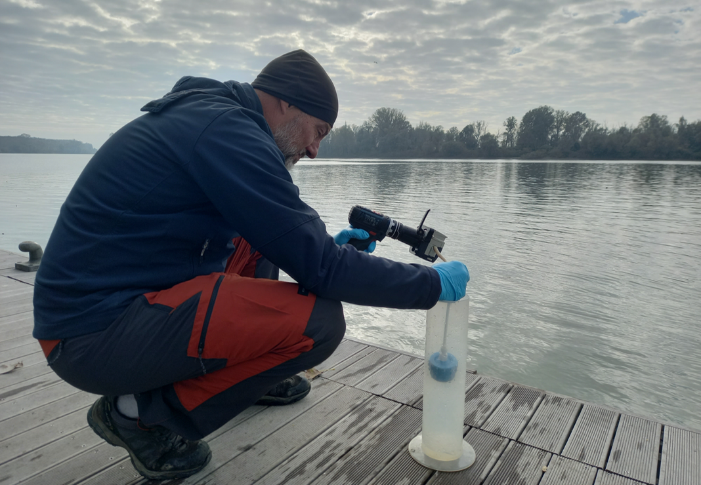

River Po biodiversity monitoring
We are mapping the biodiversity of Italy's "great river" through metabarcoding.

Water sampling for environmental DNA analysis along the Po river.
In the popular imagination, the Po river is such a benchmark of scale that it is simply known as "the great river."
That vastness, however, is also a major obstacle to monitoring the life it hosts: limited accessibility and the difficulty of guaranteeing operator safety make studying its biodiversity a real challenge.
As a result, the health of its ecosystem remains largely unknown, precisely while increasingly severe threats - such as the introduction of alien species, water withdrawals and climate change - put local biological communities at risk.
To fill this gap, in collaboration with the Po River District Basin Authority, the University of Parma and other Italian universities and research centres, we have launched a large-scale environmental DNA (eDNA) monitoring campaign along the entire course of the Po, from Ostana to Pontelagoscuro. The project's goal is to characterise fish, vertebrate, invertebrate and macrophyte communities by analysing the traces of DNA present in the river's waters, following filtration and laboratory analysis. It is no small undertaking: 24 sampling sites, six biological replicates per site, two sampling times and 4 communities bring the total number of samples to 1,152! Work is currently under way, and we look forward to sharing the first results with you as soon as the analyses are complete.